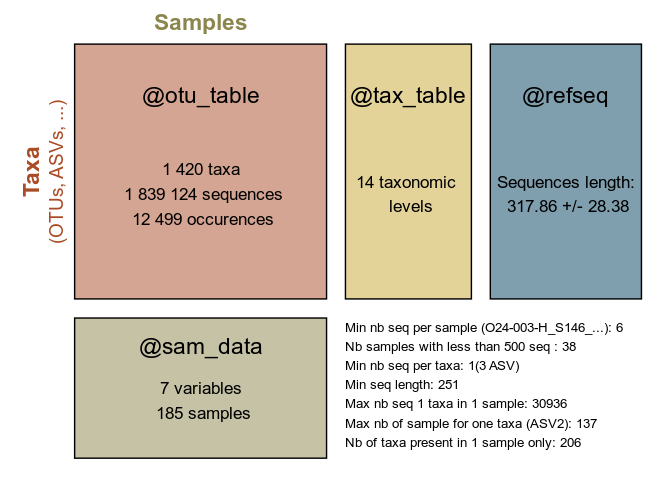
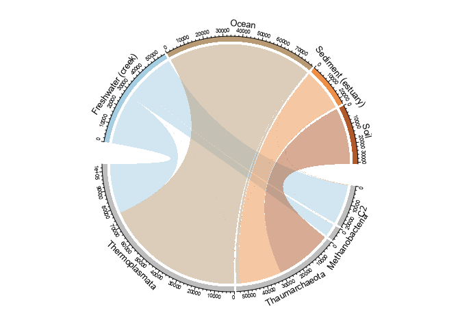
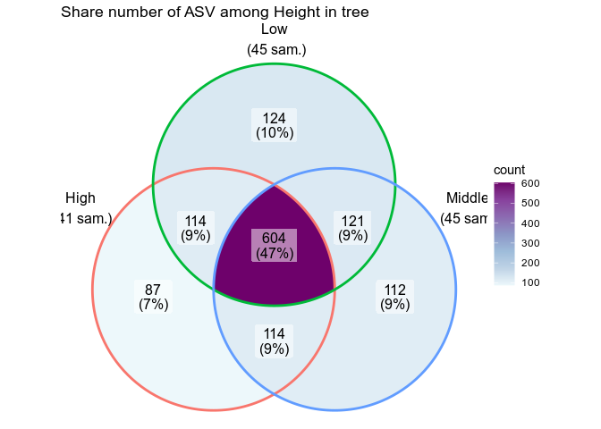

The goal of MiscMetabar is to complete the great packages dada2, phyloseq and targets. See the pkdown site here.
Installation
There is no CRAN or bioconductor version of MiscMetabar for now (work in progress).
You can install the stable version from GitHub with:
install.packages("devtools")
devtools::install_github("adrientaudiere/MiscMetabar")You can install the developement version from GitHub with:
install.packages("devtools")
devtools::install_github("adrientaudiere/MiscMetabar", ref = "dev")Some use of MiscMetabar
See vignettes in the MiscMetabar website for more examples.
Summarize a physeq object
library("MiscMetabar")
library("phyloseq")
library("magrittr")
data("data_fungi")
summary_plot_pq(data_fungi)
Alpha-diversity analysis
p <- MiscMetabar::hill_pq(data_fungi, variable = "Height")
#> Taxa are now in rows.
#> Cleaning suppress 0 taxa and 0 samples.
p$plot_Hill_0

Hill number 1
p$plot_tuckey
Result of the Tuckey post-hoc test
Beta-diversity analysis
ggvenn_pq(data_fungi, fact = "Height") +
ggplot2::scale_fill_distiller(palette = "BuPu", direction = 1) +
labs(title = "Share number of ASV among Height in tree")